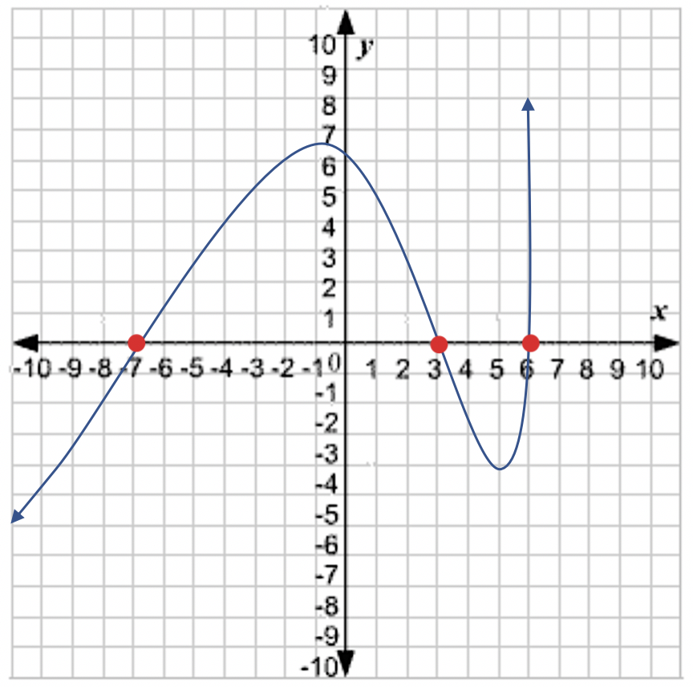
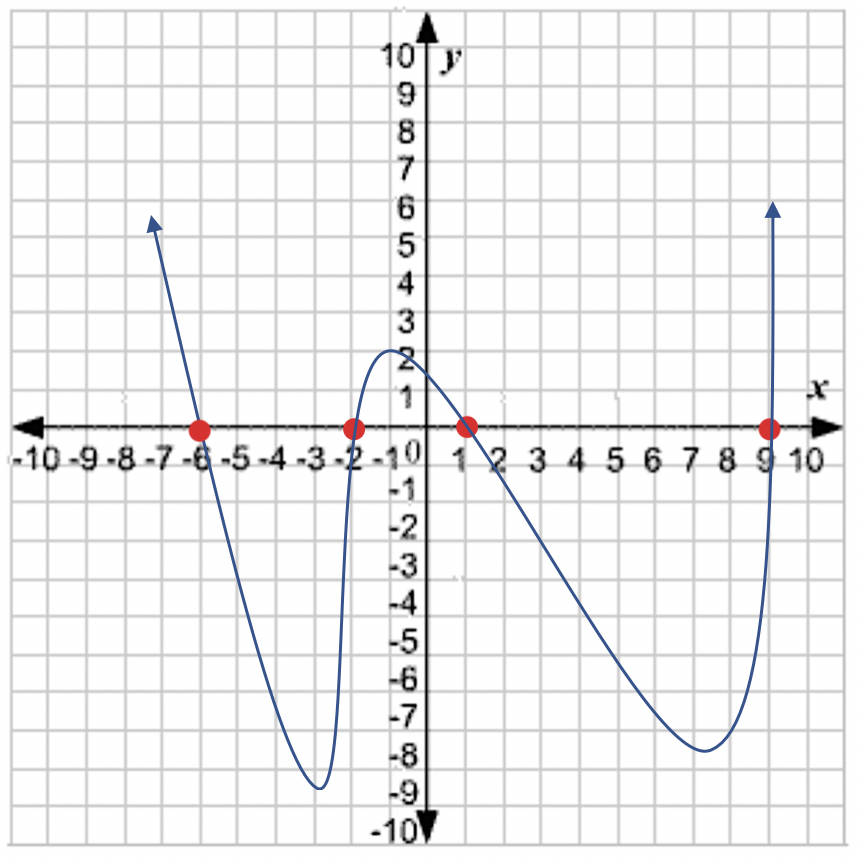
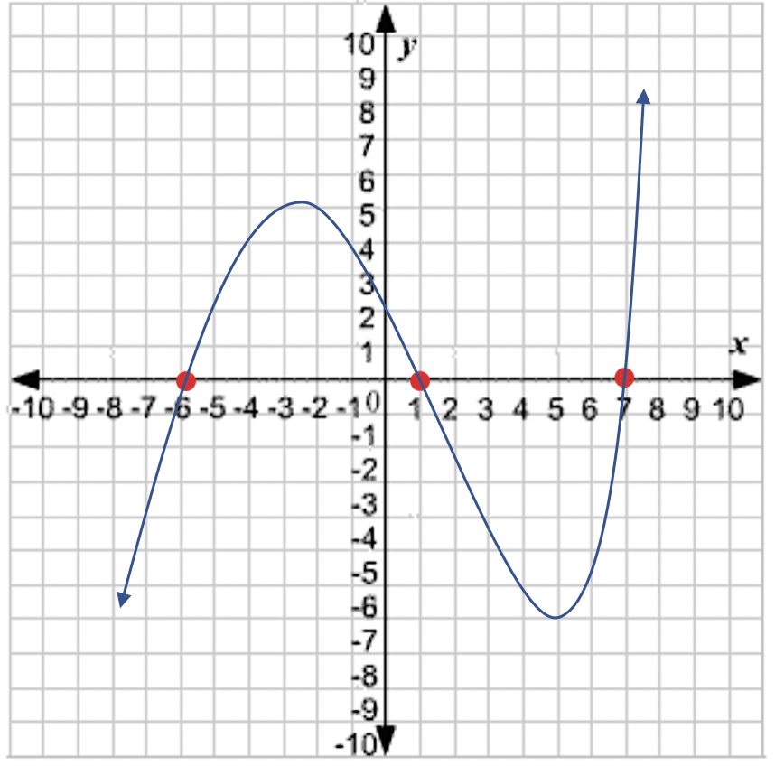
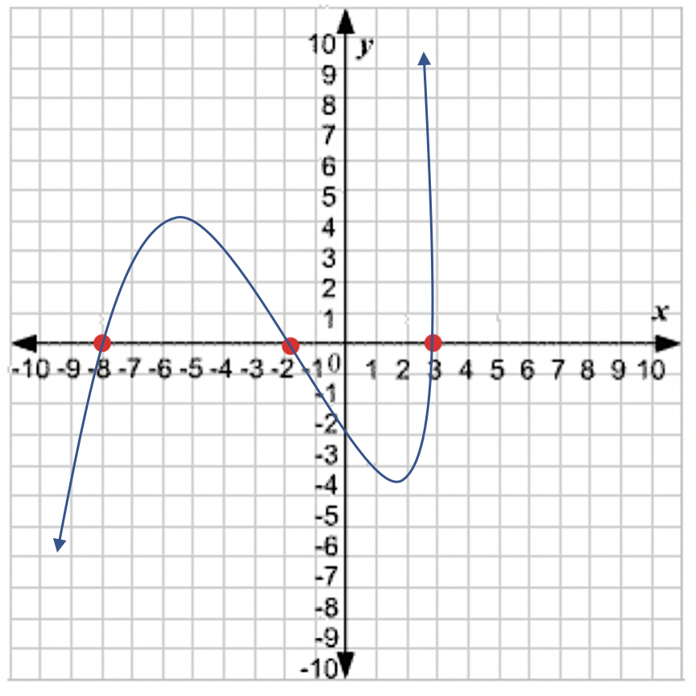
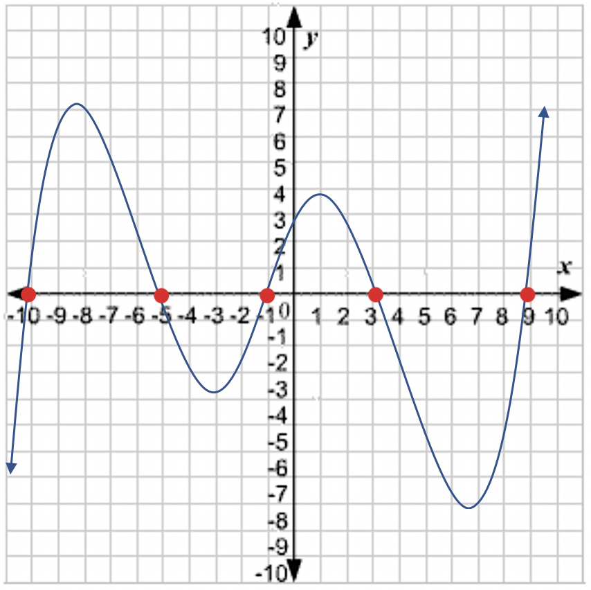

A polynomial is the term used to describe graphs of functions that are of degree two or higher. For example:
The basic shape of each function's graph depends on the exponent of the variable. The exponent describes the maximum number of times the graph crosses the x-axis.
Let's look at the graph of each function:
Let's look at a few examples.
Given the graph of a function, state the x-intercepts.

The x-intercepts have been highlighted in red. This graph has x-intercepts of b1 = -7, b2 = 3, b3 = 6. Substituting the points into the function f(x) = (x - b1)(x - b2)(x - b3) gives us the following: f(x) = (x + 7)(x - 3)(x - 6). Notice when substituting a negative value for b, it will turn the subtract sign in to a plus sign: (x - (-7)) is equal to (x + 7). When substituting positive values for b, the subtract sign remains unchanged: (x - (3)) equals (x - 3) and (x - (6)) equals (x - 6).
Given the graph, state the x-intercepts from left to right.

Given the graph, state the x-intercepts from left to right.

Given the graph of a function, fill in the equation of the graph.
f(x) = (x - )(x - )(x - )
Given the graph of a function, fill in the equation of the graph.

f(x) = (x - )(x - )(x - )
Given the graph of a function, fill in the equation of the graph.

f(x) = (x - )(x - )(x - )(x - )(x - )